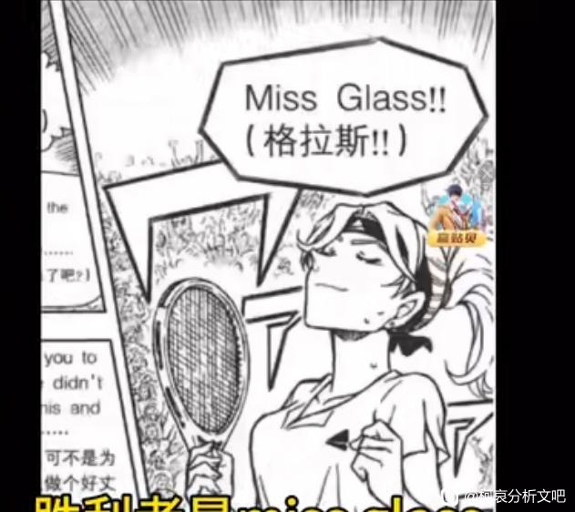
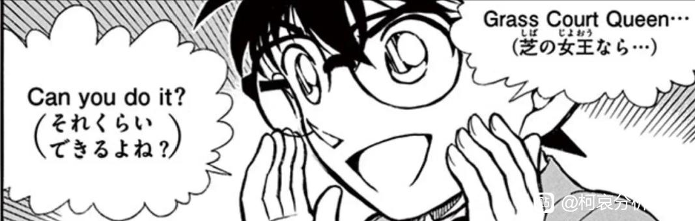
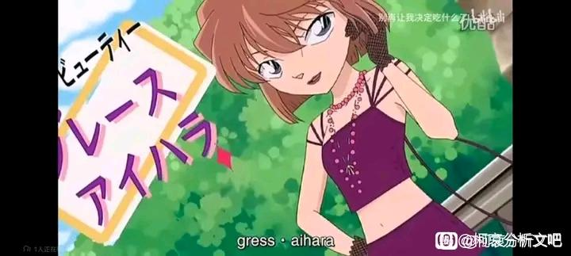
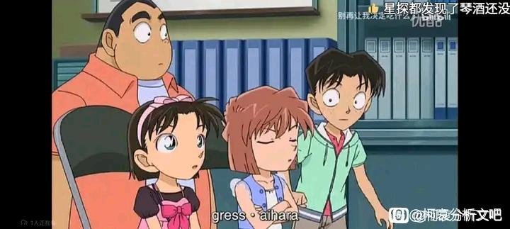
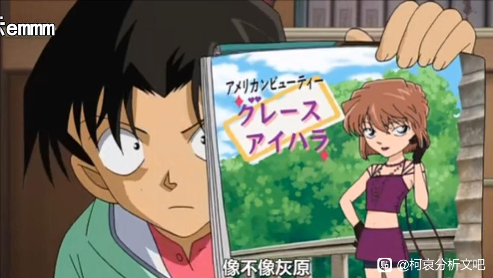
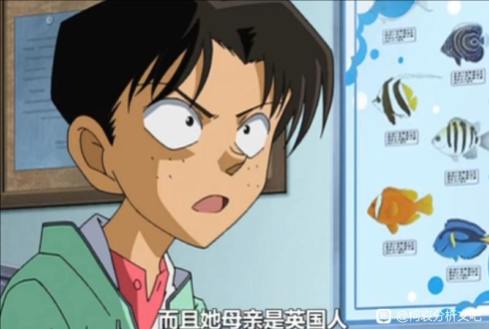
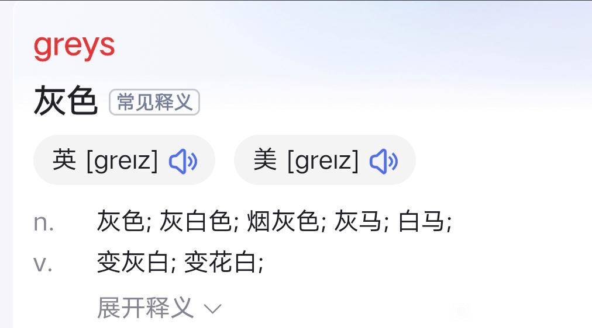
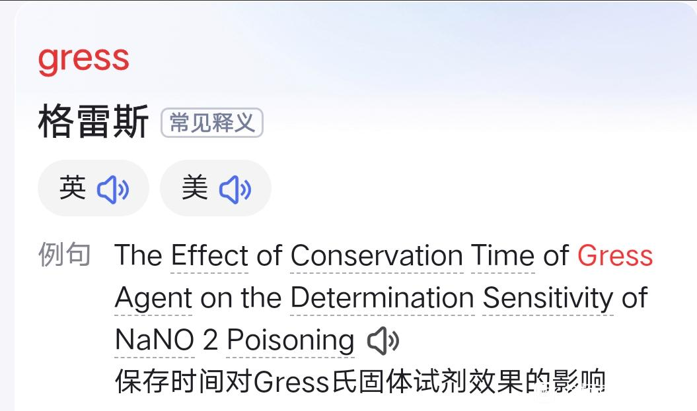
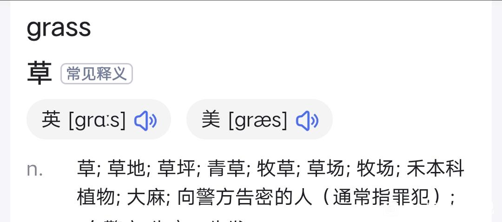

关于glass和grass
众所周知glass小姐赢了，全篇仅一处有grass


2023-12-25 02:22 | 缄默丶沉鱼🌙:现在带上眼镜👓了，怎么不算miss glass呢2023-12-28 07:54 | 么么小芹菜:冷知识:日本人发音r读作l，其实读的话grass和glass区别不大，但写出来glass就是有意为之

然而此篇章有个外传不知道大伙有没有印象：叫做《来自伦敦的秘密指令》，里面光彦的推理我觉得可以参考一下，说明青山刚昌是刻意为之




2023-11-23 11:41 | 重力场🐼:顶
希望不勉强



尽管是ova
我记得有人分析过而且更直接的漫画，你直接搜伦敦篇看看，还有麦子有一期眼镜超人和护身符那个视频里也说过类似的
麦子有解说过，建议去看一下
日语里r和l是同音，他有意为之不勉强
2023-12-25 02:36 | 贴吧用户_Q1Q3XSD:没错，水族馆篇小兰也有提到，她的名字lan 有run跑 的谐音含义2023-12-28 07:55 | 么么小芹菜:是因为不会r的发音

这个其实是老发现了
日本人分不清l r的梗
3
这个有总结好的版本了，不过楼主自己推出来的感觉还是很棒的，厉害厉害！